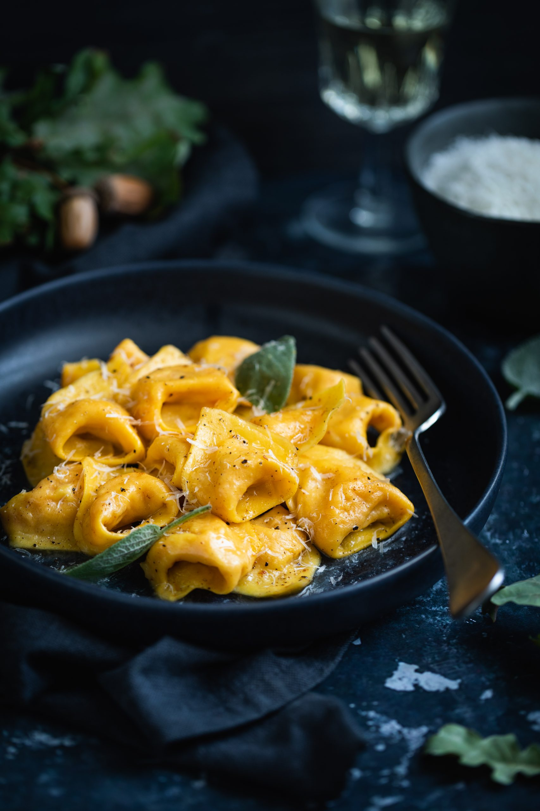
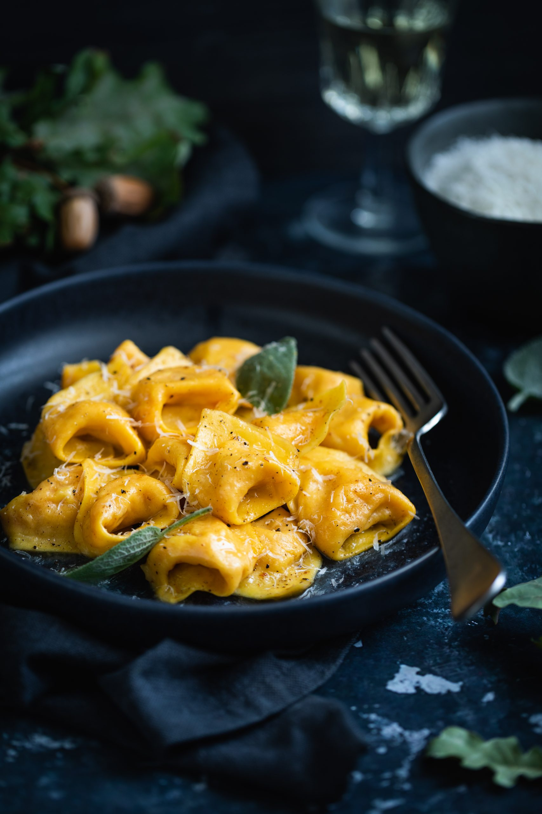

| Prato |
Descrição |
Preço |
| Tagliatelle al Ragù |
Massa artesanal de tagliatelle servida com ragù de carne cozido lentamente por 6 horas, típico de Bologna |
R$42,00 |
| Ravioli di Ricotta e Limone |
Ravioli artesanal recheado com ricota fresca e raspas de limão siciliano, servido com manteiga e sálvia |
R$39,00 |
| Gnocchi alla Sorrentina |
Nhoque de batata artesanal gratinado com molho de tomate caseiro, mozzarella de búfala e manjericão |
R$37,00 |
| Pappardelle al Funghi Porcini |
Largas tiras de massa artesanal servidas com cogumelos porcini salteados e creme leve de parmesão |
R$45,00 |
| Tortelli di Zucca |
Massa artesanal recheada com abóbora, amaretti e mostarda, finalizada com manteiga de sálvia — clássico do norte da Itália |
R$43,00 |
 
Siga nosso Instagram!

Siga nosso Instagram!